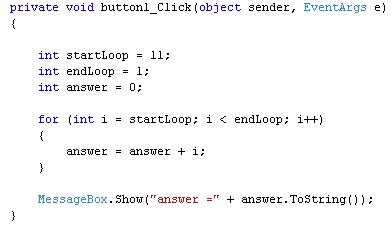
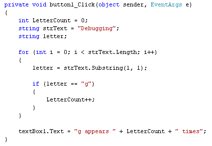

Logic Errors in C# .NET
<< Continues from the previous lesson
Logic errors are ones where you don't get the result you were expecting. You won't see any coloured wavy lines, and the programme generally won't "bug out" on you. In other words, you've made an error in your programming logic. As an example, take a look at the following code, which is attempting to add up the numbers one to ten:

When the code is run, however, it gives an answer of zero. The programme runs OK, and didn't produce any error message or wavy lines. It's just not the correct answer!
The problem is that we've made an error in our logic. The startLoop variable should be 1 and the endLoop variable 11. We've got it the other way round, in the code. So the loop never executes.
Logic errors can be very difficult to track down. To help you find where the problem is, C# has some very useful tools you can use. To demonstrate these tools, here's a new programming problem. We're trying to write a programme that counts how many times the letter "g" appears in the word "debugging".
Start a new C# Windows Application. Add a button and a textbox to your form.
Double click the button, and then add the following code:

The answer should, of course, be 3. Our programme insists, however, that the answer is zero. It's telling us that there aren't and g's in Debugging. So we have made a logic error, but where?
C# .NET has some tools to help you track down errors like this. The first one we'll look at is called the BreakPoint.